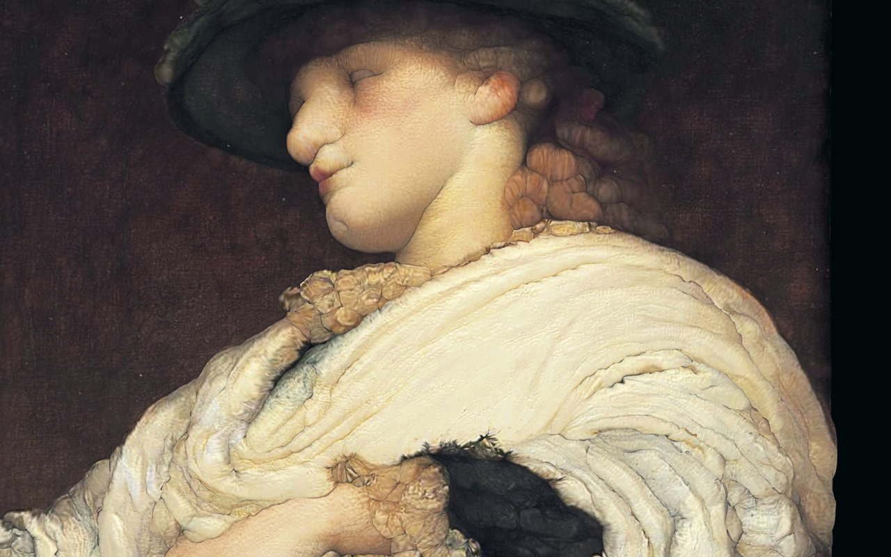

19T05 — Study D
lard shader
Lard Shader is a 3d vertex shader transforming neoclassical figures into their plump selves.
The shader first creates a vertical vertex displacement based on the intersection of brightness and red pixel values, and then re-apply itself 3 times onto the resulted new topology.
16S12 — Study C

15F02 — Study B

15F01 — Study A
Last update on 19T05.